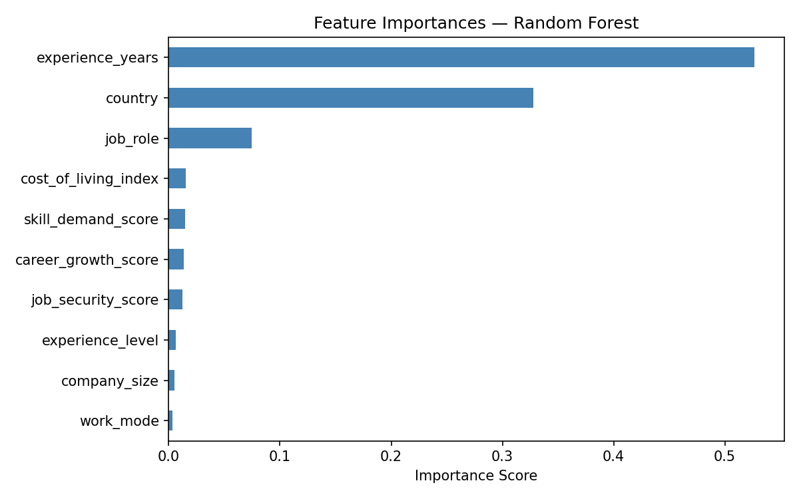
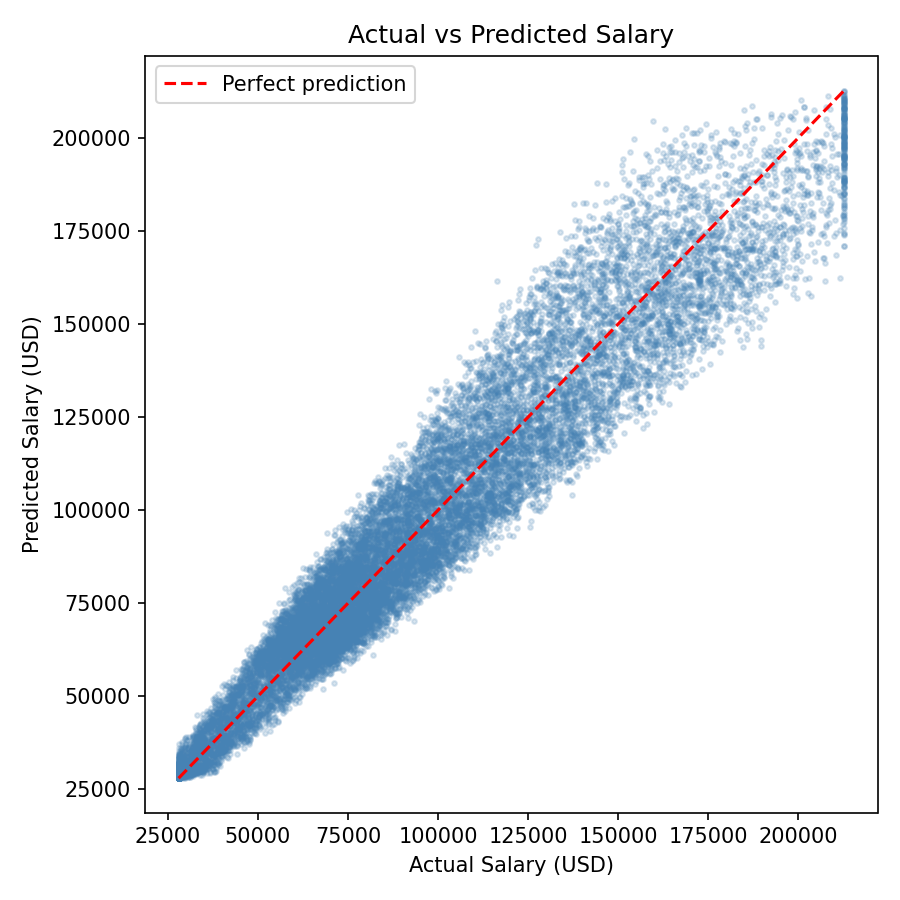

CMSC 320 · Spring 2026 Final Project Tutorial
| Member | Sections | 1–2 sentence summary |
|---|---|---|
| Grace Jagga | A, C | Proposed the project idea and led exploratory data analysis, including the salary-by-experience boxplot and summary statistics. |
| Venya Goyal | B, D | Handled dataset curation and preprocessing, and contributed to the design of the Random Forest ML pipeline. |
| Hansini Chokkalingam | E, G | Ran ML training and test data analysis, and assembled the final tutorial report. |
| Aabha Belsare | F, A | Produced the result visualizations including the feature importance and actual vs. predicted plots, and contributed to the project idea. |
| Yasaswini Bommareddy | B, H | Assisted with data preprocessing and contributed additional analysis including the job security Pearson correlation. |
Artificial intelligence is reshaping the global workforce at an unprecedented pace, and as computer science students preparing to enter the job market, understanding how AI-related salaries are determined is directly relevant to our futures. This project uses the Global AI & Data Jobs Salary Dataset to investigate what factors most strongly predict salary for AI and data roles worldwide.
We ask three core questions: Does experience level significantly affect salary? Does the size of a company matter? And can we build a model that accurately predicts salary from a combination of role, location, and experience features? Answering these questions helps current and future job seekers understand what levers they can pull to maximize compensation, and gives employers a data-grounded view of the competitive salary landscape.
We load the CSV directly into a pandas DataFrame and run a quick audit to confirm its shape, types, and completeness before touching any values.
import pandas as pd
df = pd.read_csv("global_ai_jobs.csv")
print(df.shape)
print(df.dtypes.value_counts())
print(df.isnull().sum().sum())
df.head()| id | country | job_role | ai_specialization | experience_level | experience_years | salary_usd | bonus_usd | education_required | industry | ... | job_security_score | career_growth_score | work_life_balance_score | cost_of_living_index | employee_satisfaction | |
|---|---|---|---|---|---|---|---|---|---|---|---|---|---|---|---|---|
| 0 | 1 | UAE | Machine Learning Engineer | Reinforcement Learning | Entry | 0 | 66465.0 | 5395 | Master | Automotive | ... | 57 | 65 | 73 | 1.23 | 76 |
| 1 | 2 | USA | AI Engineer | LLM | Entry | 1 | 75507.0 | 11713 | Bootcamp | Retail | ... | 69 | 60 | 51 | 0.87 | 67 |
| 2 | 3 | Brazil | Research Scientist | Analytics | Entry | 0 | 41660.0 | 5268 | PhD | Healthcare | ... | 70 | 59 | 68 | 2.13 | 61 |
| 3 | 4 | India | Software Engineer AI | Computer Vision | Senior | 6 | 43268.0 | 7975 | Diploma | Tech | ... | 79 | 65 | 55 | 1.49 | 56 |
| 4 | 5 | Germany | Machine Learning Engineer | Computer Vision | Entry | 0 | 69119.0 | 4758 | Master | Retail | ... | 64 | 52 | 69 | 0.87 | 72 |
5 rows × 35 columns
The dataset contains 90,000 rows and 35 columns. Of these, 18 are integer features, 9 are floats, and 8 are categorical object columns. A check for missing values returned 0, meaning the dataset is fully complete with no nulls to handle.
categorical_features = df.select_dtypes(include=['object']).columns
for col in categorical_features:
print(f"{col}: {df[col].unique()}")| Column | Unique values |
|---|---|
| country | UAE, USA, Brazil, India, Germany, Japan, Australia, France, Singapore, Netherlands, Canada, UK |
| job_role | Machine Learning Engineer, AI Engineer, Research Scientist, Software Engineer AI, Data Analyst, Computer Vision Engineer, NLP Engineer, Data Scientist |
| ai_specialization | Reinforcement Learning, LLM, Analytics, Computer Vision, NLP, MLOps, Forecasting, Generative AI |
| experience_level | Entry, Senior, Mid, Lead |
| education_required | Master, Bootcamp, PhD, Diploma, Bachelor |
| industry | Automotive, Retail, Healthcare, Tech, Consulting, Telecom, Energy, Gaming, Education, Finance |
| company_size | Small, Large, Medium, Startup, Enterprise |
| work_mode | Remote, Onsite, Hybrid |
print(df['salary_usd'].describe())| Statistic | Value (USD) |
|---|---|
| Count | 90,000 |
| Mean | $96,331 |
| Std dev | $43,280 |
| Min | $28,000 |
| 25th percentile | $64,677 |
| Median | $87,544 |
| 75th percentile | $123,906 |
| Max | $212,750 |
The average salary across all roles and countries is $96,331, with a wide standard deviation of $43,280 reflecting the diversity of roles, experience levels, and countries in the dataset.
Extreme values were moderated using an interquartile capping rule that replaces observations lying beyond 1.5× the IQR with the nearest boundary. This was applied to salary_usd, bonus_usd, and weekly_hours.
def cap_outliers(df, col):
Q1, Q3 = df[col].quantile(0.25), df[col].quantile(0.75)
IQR = Q3 - Q1
lo, hi = Q1 - 1.5*IQR, Q3 + 1.5*IQR
n = ((df[col] < lo) | (df[col] > hi)).sum()
print(f"Outliers in {col}: {n}")
df[col] = df[col].clip(lo, hi)
return df
df = cap_outliers(df, 'salary_usd')
df = cap_outliers(df, 'bonus_usd')
df = cap_outliers(df, 'weekly_hours')| Column | Outliers detected | Action |
|---|---|---|
| salary_usd | 1,007 | Capped to IQR bounds |
| bonus_usd | 2,748 | Capped to IQR bounds |
| weekly_hours | 0 | No action needed |
After capping, the dataset retains all 90,000 rows. No rows were dropped during preprocessing.
With the data cleaned, we ran three exploratory analyses to test which features carry signal against salary_usd. Each isolates a single variable so we can decide which features are worth carrying forward into the modeling stage.
We grouped the data by experience_level, sorted the levels by mean salary, and plotted distributions as a boxplot. For more on grouped boxplots, see the matplotlib boxplot docs.
import matplotlib.pyplot as plt
mean_salaries = df.groupby("experience_level")["salary_usd"].mean()
sorted_levels = mean_salaries.sort_values().index
groups = [df[df["experience_level"] == lvl]["salary_usd"].dropna() for lvl in sorted_levels]
fig, ax = plt.subplots()
ax.boxplot(groups, tick_labels=sorted_levels)
ax.set_title("Salary Distribution by Experience Level")
ax.set_xlabel("Experience Level")
ax.set_ylabel("Salary (USD)")
plt.show()Salary increases clearly with experience level, with medians ranging from around $65k for entry-level roles up to roughly $150k for lead roles. The spread widens at higher levels, and notable outliers appear at each tier, suggesting additional factors beyond experience also influence pay.
We ran a two-sample t-test comparing salaries at large companies against startups. The two-sample t-test is appropriate here because we have two independent groups and want to test whether their population means differ. See scipy.stats.ttest_ind for details.
from scipy.stats import ttest_ind
large = df[df["company_size"] == "Large"]["salary_usd"].dropna()
startup = df[df["company_size"] == "Startup"]["salary_usd"].dropna()
t_stat, p = ttest_ind(large, startup)
print(f"T-statistic: {t_stat:.3f}, p-value: {p:.4f}")
# T-statistic: -0.866, p-value: 0.3867| Statistic | Value |
|---|---|
| t-statistic | −0.866 |
| p-value | 0.3867 |
| Significant at α = 0.05? | No |

There is no statistically significant difference between large and startup salaries (t = −0.866, p = 0.387). Both groups have similar medians around $87k. Company size is not a meaningful standalone predictor of salary, which guided our feature selection for the model.
We computed the Pearson correlation between job_security_score and salary_usd. Pearson correlation measures the linear relationship between two continuous variables. See scipy.stats.pearsonr for details.
from scipy.stats import pearsonr
corr, p = pearsonr(df["job_security_score"], df["salary_usd"])
print(f"Pearson r: {corr:.3f}, p-value: {p:.4g}")
# Pearson r: 0.434, p-value: < 0.0001| Statistic | Value |
|---|---|
| Pearson r | 0.434 |
| p-value | < 0.0001 |

There is a moderate positive correlation between job security score and salary (Pearson r = 0.434, p < 0.0001). This is statistically significant and confirmed that job_security_score should be included as a feature in our regression model.
Three takeaways shaped our modeling decisions: experience level is a clear predictor of salary; company size alone is not significant; and job security score is the strongest single continuous signal. These findings directly informed which features we prioritized in the ML stage.
Based on our EDA, we chose a Random Forest Regressor to predict salary_usd. Random Forest was selected because it handles a mix of categorical and numeric features natively after label encoding, is robust to the outliers we observed, and produces built-in feature importance scores for interpretability. For a deeper dive, see the scikit-learn ensemble documentation.
We encoded all eight categorical columns using LabelEncoder and selected ten features that our EDA identified as likely predictors. The data was split 80/20 into training and test sets using a fixed random seed for reproducibility.
# =============================================================
# Primary Analysis: Random Forest Salary Prediction
# =============================================================
# Based on our EDA findings, we use a Random Forest Regressor
# to predict salary_usd from a mix of categorical and numeric
# features. Random Forest was chosen because it handles both
# types of features well, is robust to outliers, and provides
# built-in feature importance scores that tell us which
# variables drive salary the most.
#
# We split the data 80/20 into training and test sets, train
# the model, and evaluate using Mean Absolute Error (MAE) and
# R² score. We then visualize feature importances and plot
# actual vs. predicted salaries to assess model performance.
# =============================================================
from sklearn.ensemble import RandomForestRegressor
from sklearn.model_selection import train_test_split
from sklearn.preprocessing import LabelEncoder
from sklearn.metrics import mean_absolute_error, r2_score
df_ml = df.copy()
cat_cols = ['experience_level', 'country', 'job_role', 'company_size',
'work_mode', 'industry', 'education_required', 'ai_specialization']
le = LabelEncoder()
for col in cat_cols:
df_ml[col] = le.fit_transform(df_ml[col])
features = ['experience_level', 'job_security_score', 'experience_years',
'skill_demand_score', 'career_growth_score', 'cost_of_living_index',
'country', 'job_role', 'company_size', 'work_mode']
X = df_ml[features]
y = df_ml['salary_usd']
X_train, X_test, y_train, y_test = train_test_split(X, y, test_size=0.2, random_state=42)
rf = RandomForestRegressor(n_estimators=100, random_state=42, n_jobs=-1)
rf.fit(X_train, y_train)
y_pred = rf.predict(X_test)
mae = mean_absolute_error(y_test, y_pred)
r2 = r2_score(y_test, y_pred)
print(f"MAE: ${mae:,.0f}")
print(f"R² Score: {r2:.4f}")The model achieved an R² of 0.9225, meaning it explains 92.25% of the variance in salary across the test set. The Mean Absolute Error of $9,412 means predictions are within about $9,400 of the actual value on average — roughly 10% error across a salary range of $28k–$212k, which is strong performance for a real-world salary dataset.
We produced two plots to interpret the model's behavior and evaluate its performance.
Feature importance measures the average reduction in prediction error attributed to each variable across all decision trees in the forest. Higher values indicate that splits on that variable more consistently reduced prediction error.
importances = pd.Series(rf.feature_importances_, index=features).sort_values()
fig, ax = plt.subplots(figsize=(8, 5))
importances.plot(kind='barh', ax=ax, color='steelblue')
ax.set_title("Feature Importances — Random Forest")
ax.set_xlabel("Importance Score")
plt.tight_layout()
plt.show()
experience_years is by far the most important feature (~0.53), followed by country (~0.33). Together they account for roughly 85% of the model's predictive power. job_role adds a moderate contribution (~0.08), while company_size and work_mode have near-zero importance — consistent with our EDA finding that company size does not significantly predict salary.
The scatter plot below compares the model's predictions against true salaries on the held-out test set. Points on the red dashed line represent a perfect prediction; the tighter the cloud around the diagonal, the better the model generalizes.
fig, ax = plt.subplots(figsize=(6, 6))
ax.scatter(y_test, y_pred, alpha=0.2, color='steelblue', s=5)
mn, mx = y_test.min(), y_test.max()
ax.plot([mn, mx], [mn, mx], 'r--', linewidth=1.5, label='Perfect prediction')
ax.set_xlabel("Actual Salary (USD)")
ax.set_ylabel("Predicted Salary (USD)")
ax.set_title("Actual vs Predicted Salary")
ax.legend()
plt.tight_layout()
plt.show()
The predictions track the diagonal closely from entry-level roles around $30k up to senior roles above $200k. There is modest spread that widens slightly at higher salaries — typical for salary regression, where high-earner compensation is more variable due to factors like equity and negotiation that are not captured in the dataset.
This project set out to understand what drives salary in AI and data jobs globally. Our analysis produced three clear takeaways.
Years of experience and country of employment are by far the strongest predictors of salary. The feature importance results show these two variables alone explain roughly 85% of salary variation. For job seekers, this means accumulating hands-on experience and being strategic about which market you work in matters far more than which company size or work mode you choose.
Company size does not significantly affect pay. Both the EDA t-test (p = 0.387) and the near-zero feature importance of company_size confirm this. Startups and large enterprises pay comparably in this dataset, likely reflecting global competition for AI talent leveling the playing field.
A Random Forest model can predict AI salaries with high accuracy. With an R² of 0.9225 and a MAE of $9,412, the model performs well across the full salary range. This suggests that despite the diversity of roles, countries, and industries, salary follows predictable enough patterns that a small set of features can reliably estimate it.
For a reader entering the AI job market, the key message is: invest in years of experience, be open to geographic mobility, and do not over-index on company size when evaluating offers. For future work, it would be interesting to apply this analysis to a longitudinal dataset to track how these salary drivers shift as AI adoption accelerates over time.